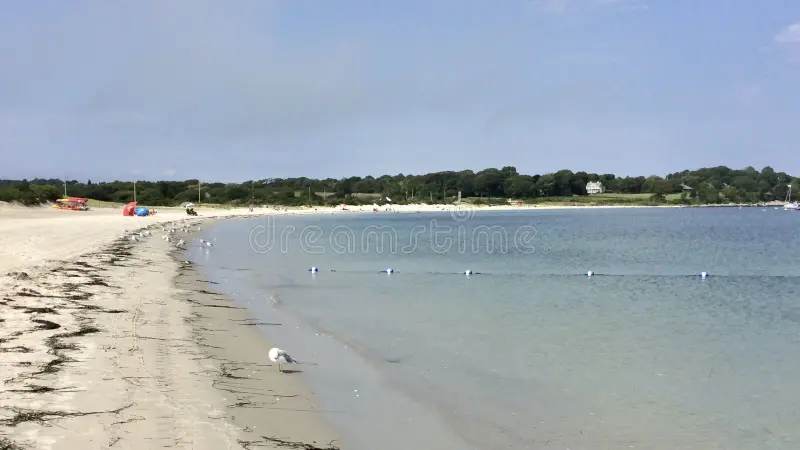
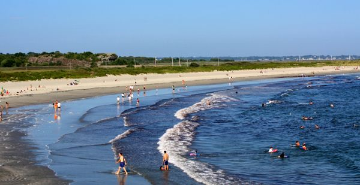
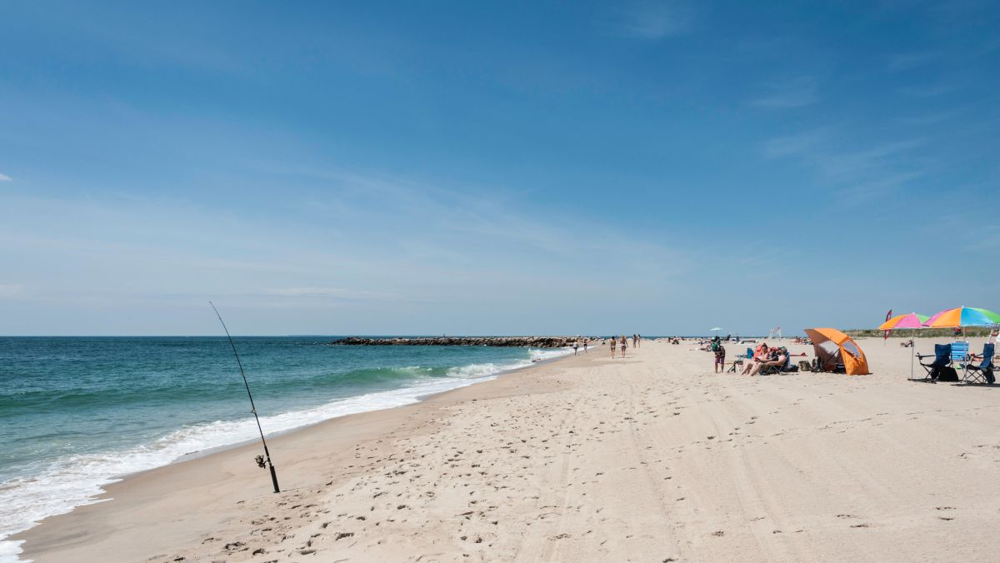
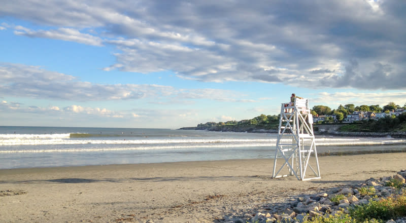

Beaches
Third Beach
Located in Middletown at 804 Third Beach Road. This vividly stunning beach is family friendly with low waves and a fantastic view of the Third Beach Harbor. In addition, it also has a boat ramp enabling you to go boating and for protection a few life guards. A few of its facilities include picnic tables, grills, and shade structures to protect from the sun.
Sachuest Beach
Located in Middletown at 315 Sachuest Point Road. Sachuest, also known as second beach, is considered as one of the most popular and longest beaches in Rhode Island. It is perfect for surfing with low winds, good sand, and high waves. If you're interested in surfing there are surf lessons during the summer as well as rentals. A few of its facilities include picnic tables, showers, life guards, changing area, and grills.
Charlestown Breachway Beach
Located in Charlestown at 812 Charlestown Beach Road. Charlestown Breach offers an open view of the Block Island Sound as well as good surfing conditions. It is considered to be once of the best saltwater fishing locations in the South County. A few of its facilities include nearby public restrooms, life guards, boat launch, and beach wheelchairs that you can use.
Easton's Beach
Located in Newport at 175 Memorial Blvd. Easton's Beach or First Beach is the largest beach in Rhode Island going as far as 3/4 of a mile of sand. The beach is also great for surfing as it faces towards the Atlantic Ocean with the quality of waves to be strong and decently big. A few of its facilities include nearby public restrooms, lifeguards, playgrounds, and more.